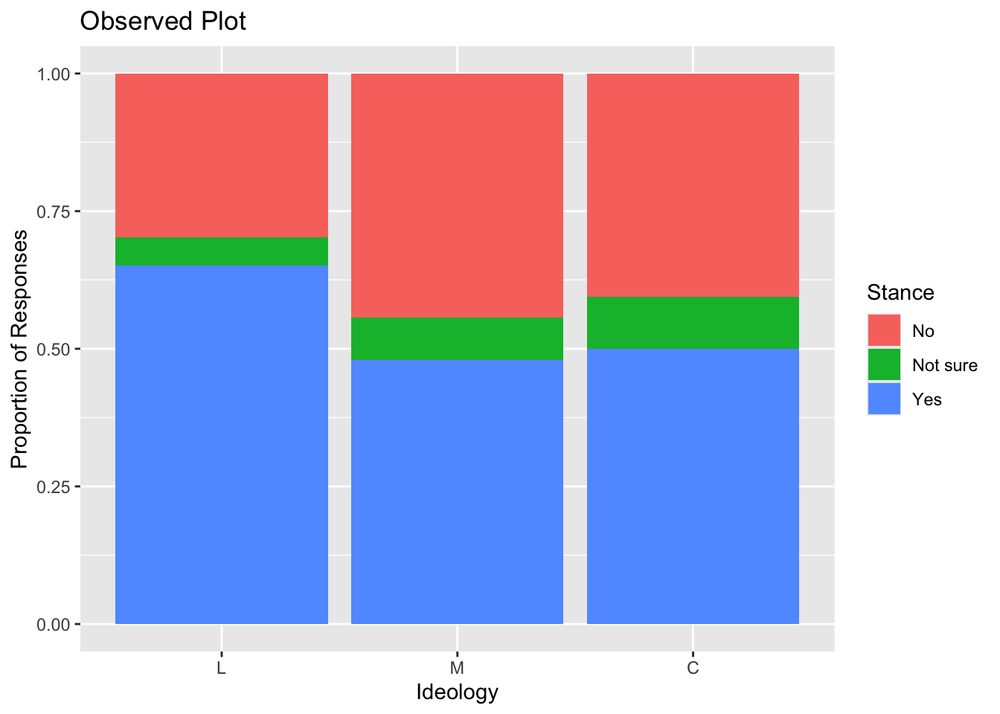
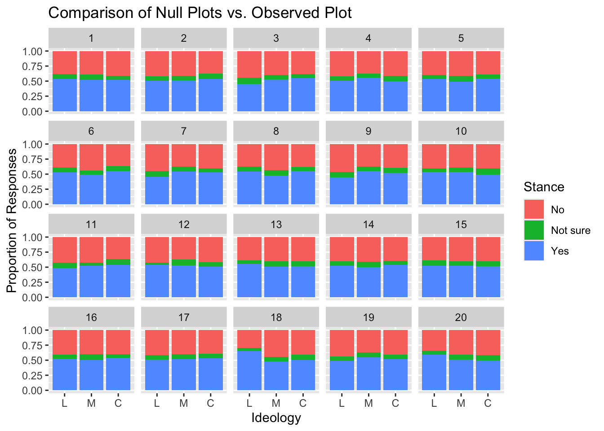

library(openintro)
library(tidyverse)
library(stringr)A Simulation Study Using Visual Inference
December 6, 2024
About the Data
About the Data
For this project, I used the ‘Dream’ data set from the openintro package. The data set came from SurveyUSA, News Poll and was collected on January 27-29, 2012. The poll surveyed the views of 910 people on the DREAM Act (a legislative proposed to give undocumented immigrants temporary residency in the US). Those surveyed were categorized into three ideologies: Liberal, Moderate, and Conservative. Their responses were: No, Not Sure, or Yes.
Claim
From the observed data of the data set:
proportion of Liberals in support of the Dream Act = 0.65
proportion of Moderates in support of Dream Act = 0.48.
proportion of Conservatives in support of the Dream Act = 0.5
Hypotheses:
P is the proportion of those in support of the Dream Act
\(H_0: P_L = P_M = P_C\)
\(H_A: P_L \neq P_M \neq P_C\)
Cleaning up Data
The data set was edited so that the rows of the ideology column only included the first letter of each of the ideologies for simplicity. They were also releveled so that Liberal was on the left, Moderate was in the middle, and Conservative was on the right.
dream <- dream |>
mutate(ideology = as.character(ideology)) |>
mutate(ideology = str_extract(ideology, "\\w")) |>
mutate(ideology = as.factor(ideology)) |>
mutate(ideology = fct_relevel(ideology, c("L", "M", "C"))) “Test Statistic”
#to know which panel to randomly place the plot in when comparing with the null
set.seed(47)
sample(c(1:20), size = 1)
obs_dream <- dream |>
group_by(ideology) |>
mutate(repeated = 18)obs_dream|>
ggplot(aes(x = ideology, fill = stance)) +
geom_bar(position = "fill") +
labs(x = "Ideology", y = "Proportion of Responses", title = "Observed Plot", fill = "Stance")
Null Distribution –> Null Plots
shuffle <- function(rep){
dream |>
mutate(ideology = sample(ideology, replace = FALSE)) |>
mutate(repeated = rep)
}After creating shuffle function, I mapped out 19 data frames that outputs what we’d expect under the null, or if the likelihood of each ideology to have each stance is equal.
#under the null
set.seed(47)
null_dream_one <- map((1:17), shuffle)|>
list_rbind()
null_dream_two <- map((19:20), shuffle) |>
list_rbind() Null Vs. Observed
#to plot all the graphs
rbind(obs_dream, null_dream_one, null_dream_two) |>
ggplot(aes(x = ideology, fill = stance)) +
geom_bar(position = "fill") +
facet_wrap(~repeated) +
labs(x = "Ideology", y = "Proportion of Responses", title = "Comparison of Null Plots vs. Observed Plot", fill = "Stance")
Conclusion
Because the observed plot is identifiable, we have evidence to reject the null and conclude that there is a difference among the proportion of those in support of the DREAM Act across the three political ideologies. Since the data came from a SurveyUSA poll, the results of this study describes Americans who identify with one of the three political ideologies used in the survey. So based on the study, we can conclude that Americans who identify as liberal are more likely to be in support of the DREAM Act than Americans who identify as moderate or conservative. However, we also need to take into account that the data came from a survey conducted in 2012, which was 12 years ago. Which means that although the study lets us generalize the results to the American population, it is limited to Americans during the 2010s as immigration policies have changed since then, and people affiliated with the three ideologies might have changed their stance on the DREAM Act if they were to be asked today.